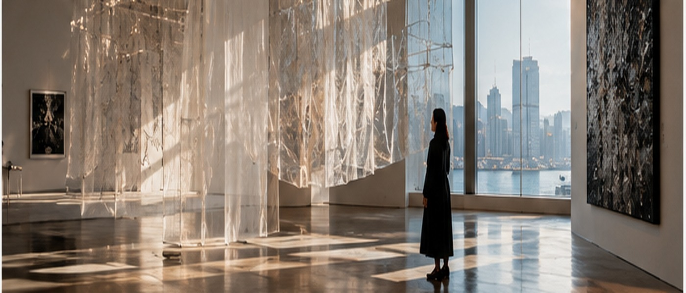
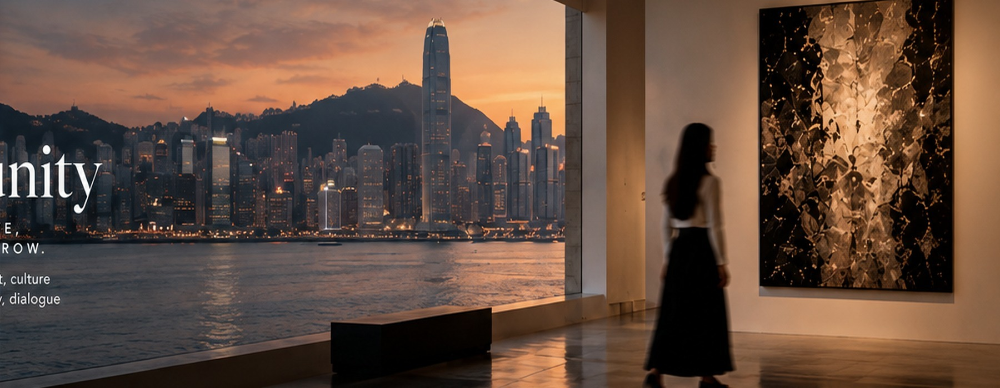
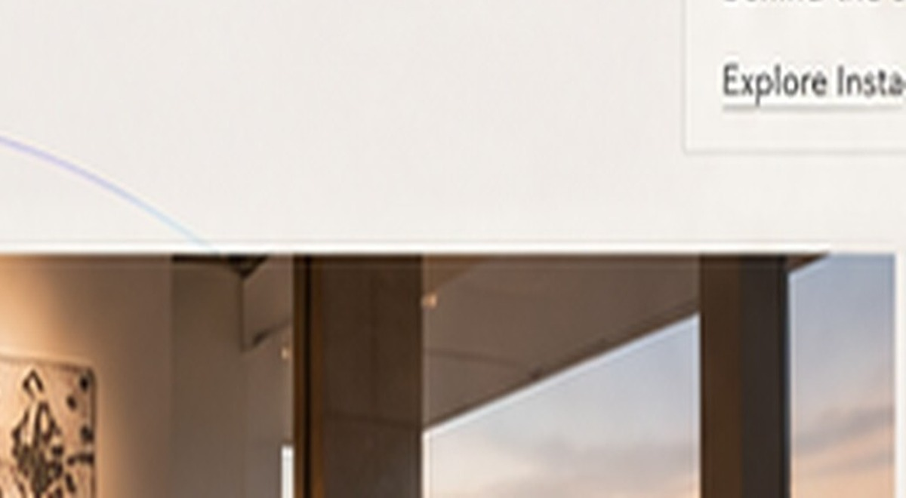

Project / Exhibition 01
Project title to be confirmed
A future ANW project, exhibition or cultural programme will be featured here.
ANW The Arture Hub
For a more creative, sustainable tomorrow.
ANW The Arture Hub connects art, culture and community through discovery, dialogue and collaboration.
Discover ANW→
About ANW
ANW The Arture Hub is a Hong Kong-based art and culture platform creating space for artistic discovery, cultural exchange and community connection.
We bring together ideas, people and practices across the arts to foster meaningful dialogue and future-facing collaboration.
Explore our pathways →
Three ways for a brighter tomorrow
Programme
Project / Exhibition 01
A future ANW project, exhibition or cultural programme will be featured here.
Project / Exhibition 02
A future ANW project, exhibition or cultural programme will be featured here.
Project / Exhibition 03
A future ANW project, exhibition or cultural programme will be featured here.
Stay connected
Stay connected with ANW across art, culture and community.

Start a conversation
We welcome conversations with artists, cultural organisations, community partners, educators, creative practitioners and collaborators who share an interest in meaningful cultural exchange.
“Art connects people. Culture builds understanding. Community creates lasting change.”Join Our Community→